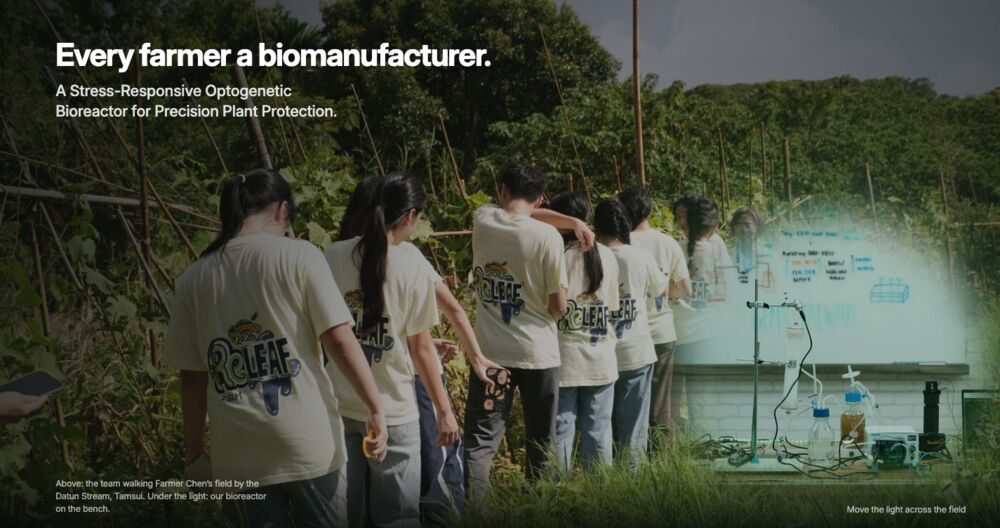
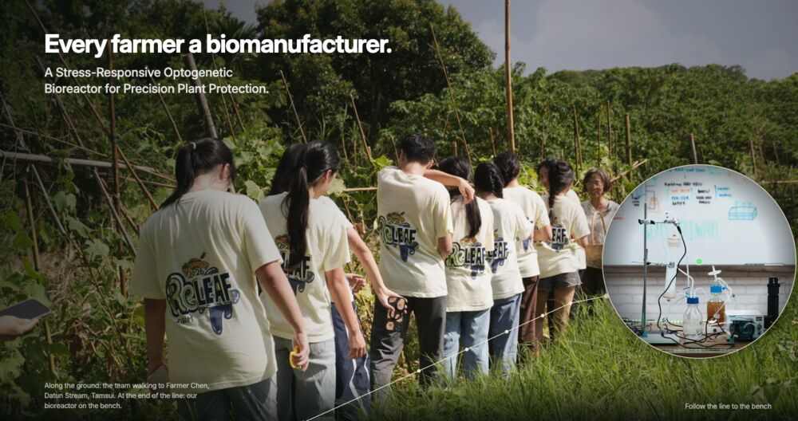
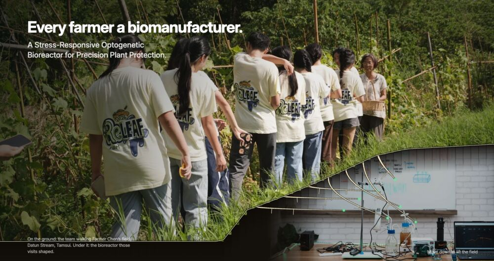
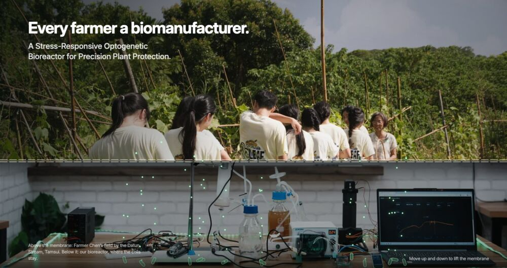

ReLeaf homepage · first screen
First visual studies
Four ways to open the homepage with two photographs in one frame: the team walking Farmer Chen’s field on top, our bioreactor on the bench underneath. Each study is the full first window, with a stand-in nav bar at the wiki’s 68px. Open one and move the cursor over the photograph; on a phone, drag.
Variants

1Green light
The cursor is a green lamp. The bench switches on under its light, and the lit path closes behind it.

2Along the line
A route under the students’ feet. The window follows the cursor and docks at the end of the line, beside Chen.

3Roots
Under the field, first reading. Lift the field and a root runs from each person down to the reactor.

4Membrane
Under the field, second reading. The line between farm and bench is the reactor’s membrane: cells stay, protectant crosses.
Round two
Leaf window and Stoma are gone. Green light and Along the line were rebuilt for smoother, more direct control. The old Under the field split into two readings with something to say: Roots (the visits feed the machine) and Membrane (the line that keeps the cells in is the line that lets the protectant out). The ReLeaf wordmark is off the hero; the slogan and the project line carry it.
What we took from Marburg
Marburg 2024 put two photographs in the same frame, a burned clearing on top and a meadow of dandelions underneath, and cut a small soft hole in the top one wherever the cursor went. Around it, a dark vignette.
Their lower layer is a texture: any spot the hole uncovers shows flowers, so the hole can stay small (about 5% of the width) and go anywhere. Ours is one object on a bench. A small hole would show a piece of whiteboard or a cable. So every variant here either makes the window large enough to hold the reactor, or knows where the reactor is and brings it into the window. The top and bottom layers also mean something different: theirs are problem and answer; ours are the same team in two places, at the farm and at the bench.
The two photographs